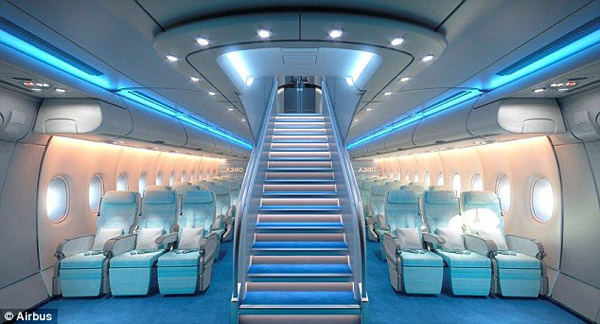
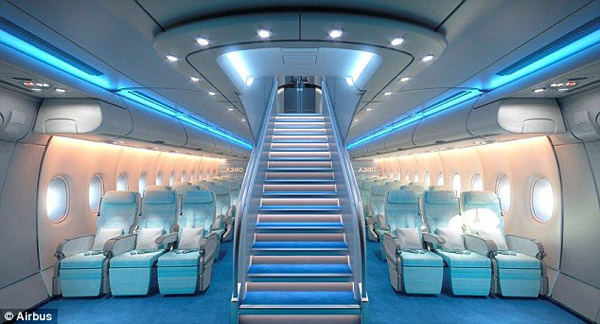
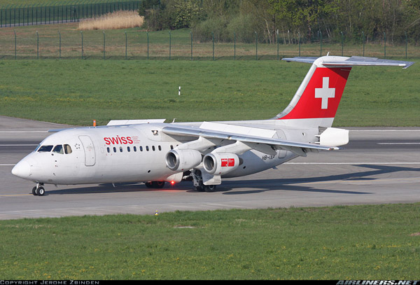
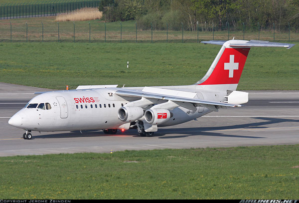

The best site for airline information and photos
 

 

There were 17,721 business jets in the worldwide fleet at the end of 2011 with about 70% of the fleet in North America. The European market is the next largest, with growing activity in the Middle East, Asia, and Central America. In 2014 the total airplane billing amounted to just over USD 22 billion and 722 business jets were delivered to customers across the globe.
After World War II, commercial aviation grew rapidly, using mostly ex-military aircraft to transport people and cargo. This growth was accelerated by the glut of heavy and super-heavy bomber airframes like the B-29 and Avro Lancaster that could be converted into commercial aircraft. The DC-3 also made for easier and longer commercial flights. The first commercial jet airliner to fly was the British de Havilland Comet. By 1952, the British state airline BOAC had introduced the Comet into scheduled service. While a technical achievement, the plane suffered a series of highly public failures, as the shape of the windows led to cracks due to metal fatigue. The fatigue was caused by cycles of pressurization and depressurization of the cabin, and eventually led to catastrophic failure of the plane's fuselage. By the time the problems were overcome, other jet airliner designs had already taken to the skies.